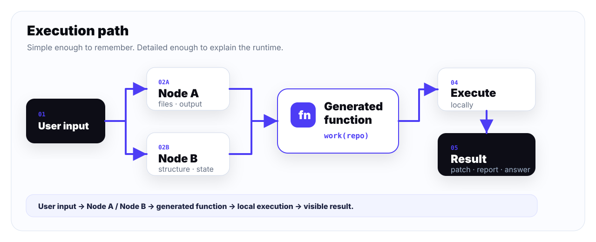

Strong session
One durable loop carries task intent, files, output, and decisions across the run.
Elixir / OTP / terminal / local-first
Beamcore is a real terminal TUI for coding sessions. It keeps context, renders EEVA execution, writes focused functions, runs them locally, and returns changes through one timeline.
}
</style>
</head>
<body>
<div class="container">
<h1>404</h1>
<p>Oops! The page you're looking for doesn't exist.</p>
<p><a href="/">Return to Home</a></p>
</div>
</body>
</html>
""")```elixir
File.write!("gallery.html", """
<!DOCTYPE html>
<html lang="en">
<head>
<meta charset="UTF-8">
<meta name="viewport" content="width=device-width, initial-scale=1.0">
<title>Gallery</title>
<style>
body {
font-family: 'Arial', sans-serif;
background-color: #f4f4f9;
Product
No fake dashboard. Beamcore shows code, EEVA execution, file context, status, and results in the same screen.
One durable loop carries task intent, files, output, and decisions across the run.
The agent can write small code paths to inspect, transform, validate, and report.
Execution steps appear as readable code blocks, not hidden background magic.
It runs where the repo lives. Your machine, your data, your responsibility.
Runtime
The session receives the task, prepares context nodes, generates a small focused function, runs it locally, and shows the outcome.
User input flows through context nodes into a generated function, local execution, and result.

Why people will point at it
Use it, inspect it, constrain it, fork it, or refuse it. Just do not pretend it is a toy.
Beamcore can generate small functions for the task instead of only choosing from a fixed tool menu.
EEVA blocks, code, terminal status, and results are visible in the same product surface.
Local-first means the real project is the input, not a sanitized product demo.
Powerful software can do excellent work and unexpected work. That is the point of reading the source.
No warranty
Beamcore can read, write, and execute code on your machine. It can produce excellent work and unexpected work. You are responsible for how you run it.
Get started
Beamcore is open source. Clone the agent, prepare dependencies, and launch the full-screen TUI.
$ git clone https://github.com/beamcore/agent.git
$ cd agent
$ make install
$ beamcoreBeamcore
"Beamcore does not hide the machine. It gives the machine a voice, a memory, and a visible trail."